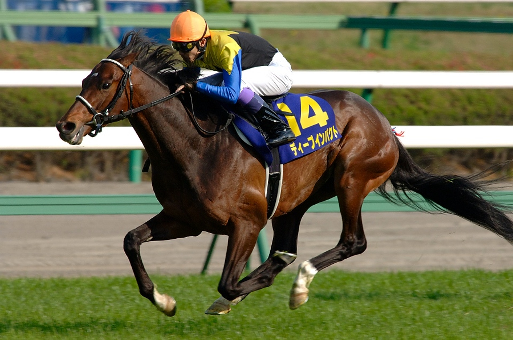

春 |
夏 |
秋 |
冬 |
在日本的賽馬（競馬）活動，主要是由日本中央競馬會（JRA）和地方賽馬全國協會（NAR）主辦。競馬為四種公營競技（競艇、賽馬、競輪、賽車）中的其中一種。
一般而言，日本賽事以平磅賽為主，雌馬會獲受讓磅，而一些公開賽或三級賽會以本賞金評定磅位，而出現讓磅情況。
總共有4組三冠賽事；

三歲雌馬組：
4月櫻花賞、5月優駿牝馬、10月秋華賞
三歲雄馬及雌馬組：
4月臯月賞、5月東京優駿、10月菊花賞
日本春古馬三冠:
4月大阪盃、5月春季天皇賞、6月寶塚紀念
日本秋古馬三冠:
10月秋季天皇賞、11月日本盃、12月有馬紀念
這邊春季為4~6月
4月: |
大阪盃 |
櫻花賞 |
皋月賞 |
由1957年為5歲（現在4歲）或以上馬匹創立的「大阪盃競走」，於3月在阪神競馬場草地1800米舉行。其後途程和舉行時間有多次變化，自1972年起在草地2000米舉行，從1982年後舉行時間移至櫻花賞的一周前，一直延續到現在。
從1984年開放予外國産馬參賽，從1995年開放予地方競馬的馬匹參加，2003年更開放予外國訓練馬參賽。從2014年到2016年，此賽冠軍將獲得「春季天皇賞」的優先出賽權。
日本中央競馬會於2016年10月17日宣布此賽從2017年起升格國際一級賽（GI），名稱為「大阪盃」，獲勝的馬匹將獲得當年的愛爾蘭冠軍錦標 (G1)的優先出賽權。
此外，從2017年開始，同年勝出大阪盃、春季天皇賞及寶塚紀念全部三項賽事將獲特別獎金(日本春古馬三冠)。
此賽為三歲雌馬三冠大賽（即櫻花賞、優駿牝馬和秋華賞）的首關賽事。此外，此賽的首5名馬匹將獲得同年「優駿牝馬」（日本橡樹大賽）的優先出賽權。
1939年，當時以英國的一千堅尼錦標為靈感，創辦為4歲（現在3歲）雌馬限定而設立的賽事「中山四歳牝馬特別」，以尋找出最快、最優秀的繁殖雌馬。與「東京優駿」、「阪神優駿牝馬」、「橫濱農林省賞典四歳呼馬」及「京都農林省賞典四歳呼馬」並列為「五大特殊競走」，為日後三歲經典三冠大賽定下基礎。
曾因太平洋戰爭的戰局惡化而中斷，戰後於1947年改在京都競馬場的草地1600米舉行 。1950年後定於阪神競馬場舉行，並延續至今。
1995年起被列為指定交流競走，符合指定條件的地方競馬所屬馬匹可以參賽。2004年起，外國產馬也可以參賽。從2010年開始，升格為國際一級賽（GI），更允許外國訓練馬參賽。
前「八大競走」之一，是日本三歲經典三冠大賽的首關，是決出最快和最優秀的種馬的賽事。因此，參賽資格僅限於4歲（現在3歲）雄馬及雌馬，閹馬不能參賽。此外，此賽首5名的馬匹（1991年至2017年僅首4名）將優先參加東京優駿（日本打吡）。
1939年，當時的日本中央競馬會以英國的二千堅尼錦標為靈感，創辦為4歲（現在3歲）雄馬及雌馬設立的限定賽事「橫濱農林賞典4歲馬」。首屆在橫濱競馬場的草地1800米舉行。與「東京優駿」、「阪神優駿牝馬」、「京都農林省賞典四歳呼馬」及「中山四歳牝馬特別」並列為「五大特殊競走」，為日後三歲經典三冠大賽定下基礎。
從1943年起，因橫濱競馬場關閉，改在東京競馬場的的草地1800米舉行，1944年，受太平洋戰爭的影響，「農商省賞典四歳」名義作為售票性能測試賽，並於1945年暫停舉辦。
1947年戰爭結束後，名稱改為「農林省賞典」。從 1949 年起，改於中山競馬場的草地1950米舉行，名稱改為「皐月賞」。1950年途程再次恢復為草地2000米，並延續到現在。
1995年起被列為指定交流競走，符合指定條件的地方競馬所屬馬匹可以參賽。2002年起，外國產馬也可以參賽。從2010年開始，升格為國際一級賽（GI），更允許外國訓練馬參賽。
東京優駿（日本打吡）是由「最幸運的馬」獲勝，菊花賞是由「最強的馬」獲勝，而皐月賞則是由「最快的馬」獲勝。
5月: |
春季天皇賞 |
NHK一哩賽 |
維多利亞一哩賽 |
優駿牝馬 |
東京優駿 |
此賽是供4歲或以上馬匹競逐的國際一級賽。賽事途程自1939年創辦以來一直為草地3200米，是日本中央競馬唯一距離為兩哩的平地賽馬國際一級賽，亦是日本中央競馬途程最長國際一級賽。
自2008年起，獲勝的馬匹將獲得當年的澳洲墨爾本盃 (G1)的優先出賽權。
從2017年起，與大阪盃和寶塚紀念組成「春季古馬三冠大賽」，同年勝出全部三項賽事將獲特別獎金。
正式名稱為「天皇賞」，但自1984年日本中央競馬會縮短秋季天皇賞途程以來則改稱為「春季天皇賞」。
前身為1953年至1995年期間東京優駿（日本打吡）預賽的「 NHK杯」。
當時為面對無法參加「經典賽」的外國產馬和短距離馬匹於春季開設一項大型4歲馬賽事（目前3歲）的呼聲，終於1996年春季創辦4歲（現在 3 歲）的一哩馬對決賽事 。
此賽事成立之初，為外國產馬及符合指定條件的地方競馬所屬馬均可參與的「指定交流競走」。 2009年開始成為國際賽事，外國訓練馬亦允許參賽。
NHK交響樂團會在開跑前在進行現場奏樂。
雌馬作為賽馬及育馬業的重要一環，傳統上被認為需要提前退役並進行配種，因此長期以來一直欠缺以年長雌馬為目標的賽事。在1996年後，隨著女皇伊莉莎白二世紀念盃開放作4歲或以上（現為3歲）雌馬的賽事導致更多年長雌馬服役，開始出現為年長雌馬增設重點賽事的聲音。另一方面，不少年長雌馬於歐洲及日本持續交出良好賽績，育馬業開始對雌馬的競賽表現日益重視。在這種情況下，此賽於2006年創立，作為4歲或以上雌馬於春季的對決。關於此次賽事的設立，日本中央競馬會內部曾有過不同意見，認為「為了提高日本國產馬匹的競賽水平，健康的雌馬應該提早退役成為種馬」。
自成立以來，已列為國際賽開放予外國訓練馬匹參賽，而屬於地方競馬的馬匹在指定賽事中達到規定成績亦可參賽。
從2017年起，此賽的前三名的馬匹將優先獲得當年的法國傑克莫華大賽（G1）的優先出賽權。
從2020年起，此賽被指定為育馬者盃挑戰系列的目標賽事，獲勝的馬匹將獲得當年的育馬者盃雌馬草地大賽 (G1)的優先出賽權和代為支付部分的報名費和交通費。
從2021年起，此賽亦納入法國隆尚磨坊大賽 (G1)的目標賽事，並給予前三名馬匹優先出賽權。
1938年，以葉森橡樹大賽為藍本，在阪神競馬場（原鳴尾競馬場）創立了僅限4歲（現在3歲）雌馬參與的「阪神優駿牝馬」。與「中山四歲牝馬特別」、「橫濱農林省賞典四歲呼馬」、「東京優駿」及「京都農林省賞典四歲呼馬」並列為「五大特殊競走」，為日後三歲經典三冠大賽定下基礎。櫻花賞被認為是尋找出速度最快的繁殖雌馬的賽事，而此賽則被認為是尋找兼具速度和耐力的繁殖雌馬的賽事。
創立時於阪神競馬場（原鳴尾競馬場）的草地2700米舉行。在1940年至1942年期間改為草地2450米。在1943年起途程改為草地2400米。在1946年後遷往東京競馬場舉行，並更名為「優駿牝馬」。從1965年起，此賽被賦予了橡樹大賽(Oaks) 為副題，並一直延續至今。此賽在1952年前均在秋季舉行，從1953年開始則改為春季舉行。
1995年起被列為指定交流競走，符合指定條件的地方競馬所屬馬匹可以參賽。2003年起，外國產馬也可以參賽。從2010年開始，升格為國際一級賽（GI），更允許外國訓練馬參賽。
於2018年至2020年期間，此賽的前三名的馬匹將優先獲得當年的法國紅寶錦標（G1）的優先出賽權。
1932年於目黑競馬場創辦，以英國的葉森德比大賽為靈感，與後來創辦的皋月賞和菊花賞組成了「三冠大賽」；同時與4歲（現在3歲）的雌馬限定賽事，即櫻花賞和優駿牝馬（日本橡樹大賽），組成「經典賽事」。
從第三屆開始將舉辦地點改為東京競馬場（府中）後，場地和途程均沒有改變。作為三歲經典三冠大賽的次關，舉辦地點即使進行大規模的翻新工程，也會透過轉移舉辦時間等措施，讓此賽盡可能地在東京競馬場舉行。勝出此賽被認為是所有日本賽馬參與者所渴望的最高榮譽之一。國寶武豊成為這項賽事勝出次數最多騎手(6次)此賽的副稱「日本德比」更廣為人知。「德比」源自於1780年在英格蘭由第十二代德比伯爵創立德比錦標（Derby Stakes）。
1973年前為日本最高獎金的賽事。其後成為獎金僅次於日本盃和有馬紀念的賽事。
6月: |
安田紀念 |
寶塚紀念 |
1951年以「安田賞」的名義成立，直至1958年安田伊左衛門去世後易名為「安田紀念」。
最初為東京競馬場舉辦，供「4歲（現在3歲）或以上」的馬匹參與的草地1600米讓賽。於1984年引入分級制後，被評為JRA GI，賽事條件改為「5歲（現在4歲）或以上」的的馬匹參與的平磅賽，並移至優駿牝馬(日本橡樹大賽)前舉行。1996年後，移至在東京優駿（日本德比）後一周舉行，賽事條件更改為「4歲（現在3歲）或以上」，並延續至今。
2005年起與香港賽馬會舉辦的冠軍一哩賽組成亞洲一哩挑戰賽，翌年再加入澳洲未來錦標及杜拜免稅店盃兩站，惜因未能吸引馬匹踴躍競逐各個分站，終於2012年停辦[3]。
1984年起開放予外國產馬參賽。1993年起被列為「國際賽事」，允許外國訓練馬參賽。1995年起更開放予地方競馬的馬匹參加。
自2016年起，此賽被指定為育馬者盃挑戰系列的目標賽事，獲勝的馬匹將獲得當年的育馬者盃一哩大賽 (G1)的優先出賽權和代為支付部分的報名費和交通費。
從2017年起，此賽的前三名的馬匹將優先獲得當年的法國傑克莫華大賽（G1）的優先出賽權。從2021年起，此賽亦納入法國隆尚磨坊大賽 (G1)的目標賽事，並給予前三名馬匹優先出賽權。
日本馬壇有兩項賽事由馬迷投票選出大部分參賽馬匹，分別為有馬紀念及寶塚紀念。
此賽於1960年創辦，標誌著日本上半年的國際一級賽賽事的結束。
從2011年起，此賽被指定為育馬者盃挑戰系列的目標賽事，獲勝的馬匹將獲得當年的育馬者盃草地大賽 (G1) 的優先出賽權和代為支付部分的報名費和交通費。從2019年起，獲勝的馬匹將獲得當年的澳洲覺士盾 (G1)的優先出賽權。
自創辦以來，此賽賽前演奏的曲目與西日本（京都、阪神、中京）的GI賽事相同。1999年後，改為使用公開徵集的専用曲目（除2012年外，每年現場演奏）。
這邊夏季為7~9月
G1賽事是最聚集人氣的，也是在天氣最舒爽的時候。JRA安排在四、五月的春天和十、十一月的秋天舉辦重要的G1比賽（有馬紀念作為一年的總結在年終時舉行）。
賽馬比賽天氣太冷不行，太熱當然也不好。日本的中央賽馬（JRA）是有明顯的四季之分。和歐洲不同的日本，一年四季都有陽光普照，因此可以很幸運地一年無休的舉辦賽馬活動。春天是由櫻花賞，皋月賞，橡樹賽和德比賽這些組成的3歲馬經典系列賽。秋天是由天皇賞，日本杯和有馬紀念這些組成的古馬中長距離系列賽。冬天在前面討論過，因為天氣影響賽道的因素無法舉行賽馬活動。那夏天呢？JRA會轉移陣地似的從首都圈，近幾，東海地區的賽馬場轉移到北海道，陸奧，越後，北九州的賽馬場來舉行賽馬活動。但舉辦的多數是以G3賽事為主的“夏季賽馬”。為什麼沒有G1賽事呢？這是因為有好成績的頂級馬夏天都在休養，準備著秋天的重要比賽。如果夏天也安排G1賽事的話，說不定秋天的比賽會完全被打亂，無法看出馬匹在最佳狀態下的最佳成績。
這邊秋季為10~12月
10月: |
短途馬錦標 |
秋華賞 |
菊花賞 |
秋季天皇賞 |
於1967年創立，在中山競馬場上舉行，供4歲（現3歲）或以上馬匹競逐的草地1200米。當時為日本中央競馬賽事中唯一一項草地短途大賽。
1984年隨著引入分級制後，被評為JRA GIII。於1987年升格為JRA GII。其後舉辦年度短途大賽的勢頭增強，於1990年升格為JRA GI，賽事時間移至有馬紀念前一周舉行。
2000年調整短距離賽事制度，賽事時間提前到初秋中山賽期的最後一周。從那時起，此賽成為在秋季的一級賽中的首項賽事，也標誌著日本秋季的一級賽賽事的開始。
2005年，全球首個國際短途系列賽「世界短途挑戰賽」成立，此賽被列入第8站賽事（2018年後停辦）。
1994年起改為國際賽事，允許外國訓練馬參賽；1995年，開放予地方競馬的馬匹參加。
2016年至2019年，此賽被指定為育馬者盃挑戰系列的目標賽事，獲勝的馬匹將獲得當年的育馬者盃草地短途大賽 (G1)的優先出賽權和代為支付部分的報名費和交通費。
從1996年創立，僅限於4歲（現在3歳）雌馬的GI賽事 。其後不少出爭此賽的馬匹也會角逐11月舉辦的女皇伊莉莎白二世盃，因此此賽也是女皇伊莉莎白二世盃的一項前哨戰。
除了2021年和2022年在阪神競馬場舉行以外，每屆賽事均在京都競馬場舉行，而2000米的途程自首屆賽事以來都未曾改變。
1995年前，女皇伊莉莎白二世紀念盃一直是4歲（現在3歳）三歲雌馬三冠大賽的尾關賽事。1996年後，隨著對雌馬賽制的改革，女皇伊莉莎白二紀念世盃開放予4歲或以上雌馬參與。因而新設立此賽以取代女皇伊莉莎白二世紀念盃成為4歲雌馬三冠大賽的尾關賽事。
自創立以來，外國產馬和地方競馬所屬馬均可參賽。從2009年開始，升格為國際一級賽（GI），更允許外國訓練馬參賽
前「八大競走」之一，是日本三歲經典三冠大賽的尾關，是決出最有耐力和最優秀的種馬的賽事。因此，參賽資格僅限於4歲（現在3歲）雄馬及雌馬，閹馬不能參賽。
1938年，以英國的聖烈治錦標為靈感，創辦為4歲（現在3歲）雄馬及雌馬設立的限定賽事「京都農林省賞典四歳呼馬」，與當時成立的「橫濱農林賞典4歲馬」和「東京優駿」（日本打吡）組成了「三冠大賽」。1948年後賽事名稱改為「菊花賞」。
皐月賞是由「最快的馬」獲勝，東京優駿（日本打吡）是由「最幸運的馬」獲勝，而具備速度和耐力，克服兩次斜坡和3000米途程的菊花賞則是由「最強的馬」獲勝。
除了1979年、2021年和2022年在阪神競馬場舉行以外，每屆賽事均在京都競馬場舉行，而3000米的途程自首屆賽事以來都未曾改變。
1995年起被列為「指定交流競走」，符合指定條件的地方競馬所屬馬匹可以參賽。2001年起，外國產馬也可以參賽。從2010年開始，升格為國際一級賽（GI），更允許外國訓練馬參賽。
此賽是供3歲或以上馬匹競逐的國際一級賽。1938年至1983年期間，賽事途程與春季天皇賞同為草地3200米。從1984年後，途程縮短至2000米，定位為最強中距離馬賽事，並定於11月下旬舉行。直到1981年後提前於10月下旬至11月上旬舉行。
從2000年起，與日本盃和有馬紀念組成「秋季古馬三冠大賽」，同年勝出全部三項賽事將獲特別獎金。
正式名稱為「天皇賞」，但自1984年日本中央競馬會縮短途程以來則改稱為「秋季天皇賞」。
11月: |
伊麗莎白女王盃 |
一哩冠軍賽 |
日本盃 |
前身為1970年至1975年在京都競馬場草地2400米的4歲（現在3歳）雌馬賽事「維多利亞盃」，是中央競馬的4歲雌馬三冠大賽的尾關賽事 。
為紀念1975年英國女王伊莉莎白二世訪問日本，1976年創立「伊麗莎白女王盃」 。
途程和賽事條件沿用「維多利亞盃」，但屆數重新計算。1995年以前，京都競馬場舉行的草地2400米均為4歲雌馬限定賽。
1996年對雌馬賽制進行了改革，此賽條件由「4歲雌馬」更改為「4歲或以上雌馬」，途程縮短至草地2200米。同年，新設立的「秋華賞」將取代此賽成為4歲雌馬三冠大賽的尾關賽事。因此，此賽的定位發生了重大變化，成為4歲雌馬於三冠大賽後與年長雌馬同場較量的賽事。
1995年起成為「指定交流競走」，取得特定成績的地方競馬所屬馬匹也可以參賽 。
1999 年起，開放予外國訓練馬匹參與的國際賽事。2008年起，作為日本秋季國際賽事系列之一舉行 。
2012年由於此賽與英國王室關係密切，因此獲得特別許可，在大英國協以外舉辦紀念伊莉莎白二世登基60週年的「鑽禧紀念」，賦予了副標題 「女王伊莉莎白二世登基60週年紀念」。此外，由於白金漢宮的特別許可，由2013年3月8日起，賽事英文名稱由「Queen Elizabeth II Commemorative Cup」改為「Queen Elizabeth II Cup」。
2022年，為紀念女王伊莉莎白二世登基70週年，英國賽馬國際（英語：Great British Racing International）為世界各地舉行以伊莉莎白二世命名的賽事及勝出馬主贈送紀念品。隨同年9月8日英女王伊莉莎白二世逝世，日本中央競馬會決定在取消當年賽事原定的副標題「女王伊莉莎白二世登基70週年紀念」以表哀悼。
此賽為 1984 年創辦的國際一級賽（GI），與春季舉行的安田紀念並列為日本一哩馬的決勝賽。
日本賽馬制度長期以來一直聚焦於長距離賽事，但近年也開始重視馬匹速度。1984年引入等級制度時，為增加短距離賽事以建立更完整的賽制而成立此賽。
除了擅於短距離的佳駟，也為經典三冠路線的3歲馬及參與秋季天皇賞的賽駒提供另一項選擇。
1995年成為「指定交流競走」，開放予符合特定資格的地方競馬的馬匹參加。1998年成為國際賽事，開放予外國訓練馬參賽。2004年更升格為國際一級賽（GI）。
2008年起，作為日本秋季國際賽事系列之一舉行 。
此賽為1981年創辦的國際邀請賽，是日本第一項國際一級賽。
2002年的日本盃因事改於中山競馬場草地跑道舉行，途程為2200米。創辦日本盃的原意是希望提升日本賽馬的質素及國際地位，如今已獲得肯定。
日本盃曾是世界錦標巡迴賽的其中一站，至2005年有關方面取消舉辦為止。
曾於日本盃取得勝利的國家代表包括日本、美國、英國、澳洲、紐西蘭、愛爾蘭、法國、德國及義大利。
日本盃的時間紀錄保持者是2018年冠軍，在日本訓練的雌馬「杏目」，時間為2分20秒6。日本本土騎師武豊4次奪得日本盃，是日本賽馬史上贏取日本盃最多次數的騎師。
官方計時夥伴浪琴錶所展示的賽事完成時間，圖中顯示為「杏目」於2018年刷新日本盃的紀錄時間。
國際賽事編錄標準委員會（International Cataloguing Standards Committee）將全球賽馬主辦國進行分類，自2007年開始，日本列入平地賽最高評級的第一部分賽馬地區及障礙賽的第四部分賽馬地區。
根據國際馬匹體育聯盟（IFHA）公佈的「全球百大一級賽」，此賽在2020年以124.50分排行第3位，僅次於朱德望國際錦標及愛爾蘭冠軍錦標 。
12月: |
日本冠軍盃 |
阪神兩歲牝馬錦標 |
朝日盃未來錦標 |
有馬紀念 |
希望錦標 |
東京大賞典 |
自1970年代後半期以來，日本一直提倡「世界級的強馬」，並計劃舉辦邀請日本以外訓練的馬匹參與的國際賽事。經過多年預備，「日本盃」於1981年成立，是日本首項國際邀請賽。從1995年開始，中央競馬與地方競馬的交流急劇增加，因此跨越中央與地方的泥地賽事成為關注的焦點。 為使日本賽駒能在世界的泥地賽事中佔有一席之地，日本賽駒開始挑戰阿聯和美國的泥地賽事。在這種情況下，「與日本盃同時舉辦國際泥地賽事」的呼聲越來越高，終於日本首項泥地國際邀請賽「日本盃泥地大賽」於2000年在東京競馬場泥地2100米創辦。
在2007年前，「日本盃泥地大賽」通常在「日本盃」前一天舉行（2004年同日舉行），但由於此賽在與途程相近及泥地好手雲集的美國育馬者盃之後舉行。面對賽程過於緊湊等問題，從2008年起推遲此賽賽期，並將移至阪神競馬場的泥地1800米舉行。
2014年後打造此賽成為日本地位最高的泥地賽事，以日本訓練馬為核心，同時由國際邀請制改為國際賽事，JRA不再承擔外國遠征馬匹的相關費用。此賽移至左轉的中京競馬場泥地1800米舉行，並更名為「冠軍盃」。此外，由於「冠軍盃」繼承自「日本盃泥地大賽」，因此2014年舉辦的是第15屆賽事。
此賽允許最多8匹外國訓練馬參賽。從2008年起成為「日本秋季國際賽事系列」其中一項賽事，於「日本秋季國際賽事系列」最後一周舉行。在指定外國賽事的應屆冠軍於此賽跑獲指定名次可獲額外特別獎金。但是，外國訓練馬出賽的數量比首屆更少，甚至有幾年沒有外國訓練馬參賽。自成立到2013年，外國訓練馬在只於2003年勝出一屆，其餘均由日本訓練馬匹勝出。
從2020年起，勝出此賽的馬匹將獲得該季在沙烏地阿拉伯舉辦的國際邀請賽 —「沙烏地盃」（G1）的優先出賽權。
1949年以「阪神三歲錦標」的名義創立，以供關西所屬的冠軍3歲（現在2歲）馬匹的決戰。創辦時的途程為草地1200米，1962年後改為草地1600米，2006年後改用同年新設的外圈跑道，並延續至今。
1991年前此賽定位為冠軍雄馬及雌馬的賽事，1991年起改為雌馬限定賽事，賽事更名為「阪神三歲牝馬錦標」，定位為冠軍3歲（現在2歲）雌馬賽事。此後，由於國際馬齡顯示標準的變化，賽事名稱更改為「阪神兩歲牝馬錦標」。
從1971年開始，允許外國産馬參賽。1995年起開放予地方競馬的馬匹參加。從2010年開始，升格為國際一級賽（GI），更允許外國訓練馬參賽。
此賽除了被定位為與翌年3歲經典賽事直接掛鉤的重要賽事外，過去不少於此賽獲勝的馬匹成長後也能於年長馬的大賽交出良好表現。
隨著歐美經典賽制的建立，英國從1786年起在新市場馬場（羅利賽道）舉辦2歲馬賽事，但日本在1946年秋季在東京競馬場首次舉辦了3歲馬（現為2歲）的賽事。此後，3歲馬（現為2歲）賽事開始在世界各地的賽馬場舉行。1949年，在中山競馬場創辦的「朝日盃3歲錦標」 是關東地區冠軍3歲馬（現為2歲）的決戰。在2013年前，此賽一直在中山競馬場舉行，但從2014年起，舉辦場地改為阪神競馬場。
2001年，由於國際馬齡顯示標準的變化，賽事名稱更改為「朝日盃未來錦標」。
創辦時的途程為草地1100米，1959年後改為草地1200米，1962年後改為草地1600米。
賽事條件在1991年改為「只限雄馬及閹馬」，以明確此賽為決出雄馬及閹馬的冠軍爭奪戰，但從 2004年開始改為「只限雄馬及雌馬」，閹馬不能參賽。從1971年開始，允許外國産馬參賽。1995年起開放予地方競馬的馬匹參加。從2010年開始，升格為國際一級賽（GI），更允許外國訓練馬參賽。
此賽除了被定位為與翌年3歲經典賽事直接掛鉤的重要賽事外，過去不少於此賽獲勝的馬匹成長後也能於年長馬的大賽交出良好表現。
日本馬壇有兩項賽事由馬迷投票選出大部分參賽馬匹，分別為有馬紀念及寶塚紀念。
在1955年前，中山大障害是中山競馬場舉行最重要的一項賽事，但對比東京優駿（日本打吡）等賽事下則相形見拙。有見及此，時任日本中央競馬會理事長有馬賴寧（日語：有馬頼寧）在中山競馬場新看台落成後提出於年末在中山競馬場舉辦一場可與東京優駿（日本打吡）匹敵的大型賽事，並引用一種全新方式，由馬迷投票決定參賽馬匹。
此賽在1956年12月23日首次舉行時，名稱為「中山グランプリ」（中山Grand Prix），途程為中山競馬場草地2600米。在首屆賽事舉行不久，此賽創辦人有馬賴寧（日語：有馬頼寧）於1957年1月9日病逝，為了紀念對有馬對日本賽馬運動發展所作出的貢獻，賽事改稱為有馬紀念。
1995年起被列為指定交流競走，符合指定條件的地方競馬所屬馬匹可以參賽。2000年至2006年期間，應屆日本盃冠軍的外國訓練馬也可以參賽。從2007年開始，升格為國際一級賽（GI），允許外國訓練馬參賽。
此賽前身為1984年創辦的「短波電台盃三歲牝馬錦標」。 在1991年更名為「短波電台盃三歲馬錦標」，在2001年因國際馬齡顯示標準的變化更名為「短波電台盃兩歲馬錦標」。在2006年配合贊助商日經廣播電台的品牌變更，此賽更名為「日經電台盃兩歲馬錦標」。
日本賽馬近年開始加強對2歲馬開展競賽生涯，為2歲馬舉辦的賽事途程日趨多元化，尤其中距離賽事的提昇效果顯著。因此在2013年前在阪神競馬場草地2000米舉辦的國際三級賽「日經電台盃兩歲馬錦標」，從2014年起升格為國際二級賽，並改於中山競馬場草地2000米舉行，將其定位為2歲中距離的頂級賽事。
2017年1月，此賽獲升格為國際一級賽（GI），與JRA舉辦的另兩場2歲馬國際一級賽同在12月舉行。
此賽在1955年以「秋之鞍」名義創立，與「春之鞍」（東京德比）、春季特別賽（阿拉伯馬德比）和秋季特別賽（全日本阿拉伯馬大賞典）並列為大井競馬場四大賽。首屆賽事在2600米的泥地賽道舉行，冠軍獎金為100萬日元。1964年更名為「東京大賞典」，其後途程經歷數度變更，終在1998年定於泥地2000米。與南關東公營競馬於1978年新設的「帝王賞（日語：帝王賞）」並列為兩大純種古馬賽事。
此賽從1964年起定於12月底舉行。自1999年起定於12月29日舉行，作為是南關東公營賽馬以至日本賽馬年度總結的賽事。
自1995年起，已被指定為中央及地區全國交流競走 ，日本中央競馬會（JRA）和其他地區地方競馬所屬馬可以參賽。
1997年獲評為統一GI（南關東G1），2011年起開放為允許外國訓練馬參與的國際賽事，同時也是首個地方競馬舉辦的國際一級賽（GI）。
現在的賽事名稱是在1964年參照有馬紀念由馬迷投票與參賽馬匹一同選出。在當地賽馬節目表中，則以「農林水産大臣賞典（國際交流） 東京大賞典」表示 。
特別區競馬組合於2010年10月18日宣布，此賽從2011年起作為國際賽事舉行，並獲得日本分級評定管理委員會升格為國際一級賽（GI），是地方競馬首項獲評為國際一級賽的賽事。
這邊冬季為1~3月(1月無G1賽事)
2月: |
二月錦標 |
此賽是日本中央競馬會所舉辦的泥地大賽中歷史最悠久的賽事。
前身為1984年在東京競馬場創辦的「二月讓賽」，途程為泥地1600米，最初被評為JRA GIII。1994年升格為JRA GII，改為條件配磅，並更名為「二月錦標」。
1997年，為擴大中央競馬與地方競馬的交流，此賽成為首項升格為JRA GI的中央競馬泥地賽事，並改為分齡讓磅，定位為上半年最強泥地馬 。2007年成為國際賽事，允許外國訓練馬參賽。
自2016年起，此賽被指定為育馬者盃挑戰系列的目標賽事，獲勝的馬匹將獲得當年的育馬者盃經典大賽 (G1)的優先出賽權和代為支付部分的報名費和交通費。
部分於此賽中交出良好表示的馬匹也會遠征戰在阿聯杜拜舉行的國際賽事「杜拜世界盃」。 2011年冠軍「創昇」在勝出此賽後角逐「杜拜世界盃」，在「比薩勝駒」(Victoire Pisa) 後跑獲第二名。
1999年，來自岩手縣競馬組合的「Meisei Opera」成為首匹勝出此賽的地方競馬所屬馬
3月: |
高松宮紀念 |
賽是日本春季短距離王者決勝賽，也標誌著日本春季的國際一級賽賽事的開始。
該賽事的前身為1967年為4歲或以上（現3歲）馬而設立的分級賽「中京大賞典」。1970年從高松宮宣仁親王賜贈獎盃後，於1971年更名為「高松宮盃」，作為每年夏季在中京競馬場草地2000米舉行的中距離賽事。
1996年，中央競馬的短距離賽事制度得到改進，將賽此升格為JRA GI，並將途程縮短至草地1200米及改為5月舉行，定位為春季短距離王者決勝賽。與此同時，這也是日本中央競馬史上首項在「中央場所」（中山、東京、京都、阪神）以外的賽場舉行的永久性 GI 賽事。
1998年後，由於同為宮杯的競輪及競艇給予宮家的謝禮金等問題以及《皇室經濟法》的規定，高松宮不再賜贈獎盃，賽事名稱改為「高松宮紀念」。
2000年起改為3月舉行，賽事條件也已更改為「5歲（現在4歲）或以上」。2001年，改為國際賽事，允許外國訓練馬參賽。2007年，升格為國際一級賽。
2011年加盟「世界短途挑戰賽」，緊接澳洲閃電錦標及杜拜金莎軒錦標，直至2018年「世界短途挑戰賽」停辦為止。